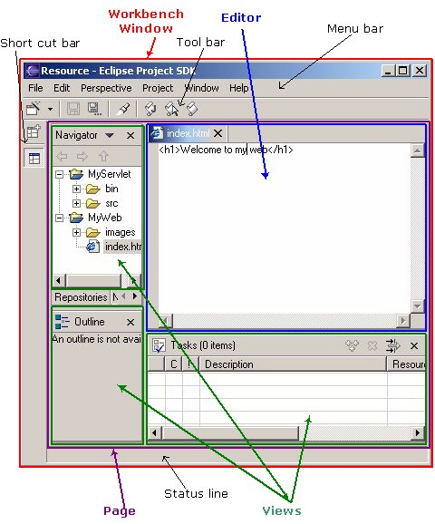
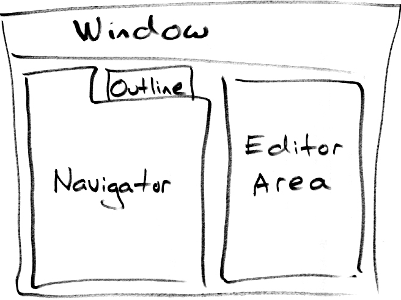
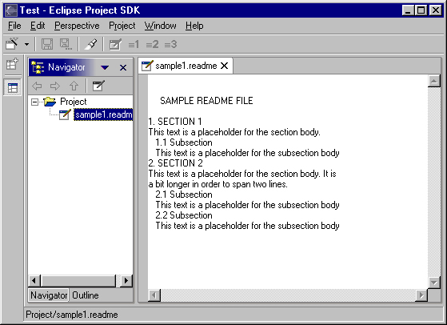

| Eclipse Corner Article |
By Dave Springgay, OTI
August 27, 2001
In this article the perspective concept will be explored in detail. In particular, we'll look at how it relates to task oriented interaction, multi-tasking and information filtering. We'll also look at the techniques to define a new perspective, extend an existing perspective, or instantiate a new perspective at runtime within the workbench. Coding samples are provided for each technique.
Each perspective has an input and a type. The input
attribute is used to define which resources are visible in the workspace
and the
type attribute is used to define which actions and views
are visible in the user interface. This design is a reflection of
3 key concepts.
Each of these will be covered in detail below. But before
getting into the details, let's explore the idea of input and type.
On startup the workbench will most likely consist of one window with one perspective. For instance, the window may contain a Resource perspective on the entire workspace. This perspective has input = the Workspace and type = Resource. If you select a project or folder in the Navigator you can open a new perspective by invoking Open Perspective > Java™ from the object context menu. This new perspective has a different input and type: input = the Project and type = Java. Now there are two perspectives. The visible resources in the second perspective are a subset of those in the first. Each perspective contains a set of views and editors which exist wholly within the perspective and are not shared with the other. These parts define the presentation for a shared, underlying model.
WebApplicationProject ClientSide index.html link1.html image1.html ... MiddleTier script1.jsp script2.cgi script3.perl Main.java DataBase.java ... DatabaseServer sqlScripts.script serverConguration.config ...The contents of this project are very typical of application development in the Internet age. No single language or technology can do it all, and software development involves the application of many technologies rather than just one.
An important tool for comprehension is information filtering. In other words, remove the irrelevant so you can see the relevant. In Eclipse this is performed in two ways, by using the inherent structure of the information (the resource tree) and the unstructured attributes of the information (file name, nature, resource type, etc.). For this discussion only the first style of information filtering is relevant.
In a large project the resources are usually structured within a hierarchy. The workspace contains many projects containing many folders containing many files. It's a tree, and each subtree within the whole defines a physical subset of information. This idea is the basis for information filtering within the workbench. The user can open a perspective on any resource subtree within the workspace. In the resulting perspective only the children of the subtree root are visible. The subtree root is known as the input. For example, if you open a perspective on MiddleTier within the WebApplicationProject only the children of MiddleTier are visible within the resulting perspective. The input = MiddleTier.
In Eclipse a task oriented approach was taken to filtering. Consider a Java developer. Within a single development cycle a Java developer may iterate through the following phases: Analysis and Design, Implementation, Debug, Testing and Documentation. In one phase the developer may use a UML modeling tool. In another you use a Problem Reporting tool. The time spent in each phase will vary but rapid transition between phases may occur several times a day. If we say that each phase is a "task" then it is possible to say there is rapid transition between tasks. In addition, the preferred way to look at resources in the workspace will change with the active task.
In Eclipse task orientation is embodied by perspective type. A perspective determines the visible actions, views, and view layout within the window. There are many types of perspective, and each one defines the layout in a different way. Ideally, the layout should be tailored to suit a particular set of related tasks. For instance, the standard Eclipse platform includes a Java perspective and a Team perspective. The Java perspective defines a layout containing the Package, Hierarchy, Outline and Tasks view. This is useful for java development. The Team perspective defines a layout containing the Repositories and Synchronize view. This is useful for code sharing and versioning. In Eclipse the user can open a new perspective with a particular type, switch from one perspective to another with different type, or change the type (layout) of an existing perspective as they move from one task to another.
The ability to open more than one perspective is also crucial for multi-tasking support. Developers often multi-task without even knowing it. For instance, in a team environment a coworker may walk into your office to ask a question. In response, you open up a class hierarchy and explore the code for a few minutes. This is a new task and it should have no impact upon your previous task. It demands good task separation. In Eclipse the creation of the second task can be accomplished by just opening a new perspective. When the task is complete you can close the perspective and return to the old task without loss of context.
At the implementation level things become more complex. The platform user interface is exposed through a series of interfaces in org.eclipse.ui. The root of the user interface is accessed by invoking PlatformUI.getWorkbench( ). This returns an object of type IWorkbench. A workbench has one or more windows of type IWorkbenchWindow. And each window has a collection of pages of type IWorkbenchPage. In the user interface a page is known as a "perspective". Within each window there is at most one active and visible page.
The structure of the workbench is exposed within the following diagram. The workbench window is outlined in red. Within this window there is a single open perspective. It's purple. But to be truly accurate, the user calls it a "perspective". At the implementation level it is an IWorkbenchPage.

While the workbench is running new windows and pages can be created interactively by invoking Open Perspective from the window menu or from the Navigator context menu. A page can also be created programmatically using public API on IWorkbenchWindow. For instance, the following code demonstrates the creation of a new page.
// fWindow is an IWorkbenchWindow.
fWindow.openPage("org.eclipse.ui.resourcePerspective", ResourcesPlugin.getWorkspace());
In this example the two parameters to openPage identify the perspective
type and input, in that order. The perspective type is identified
by a string. Each perspective has a unique id. In this case
"org.eclipse.ui.resourcePerspective"
identifies the Resource perspective. The perspective input may be
any object of type IAdaptable. In this case the input is
the entire workspace.
The openPage method creates and returns an object of type IWorkbenchPage. Given a page, you can get the input and perspective type by using the following methods.
public IAdaptable getInput(); public IPerspectiveDescriptor getPerspective();There is an interesting twist here. When a new page is created you identify the perspective type by id. In the openPage method the id is mapped to a perspective descriptor within a list of known perspectives types and the result is stored within the return page. The getPerspective method on IWorkbenchPage returns an object of type IPerspectiveDescriptor. This object has accessor methods for the perspective id, label and icon.
The page input determines which resources are visible in the page. In practice, resource visibility in a page is implemented through collaboration between the page and the views within that page. The page itself is a visual container for views and editors. It doesn't provide any presentation for resources. That is delegated to the parts within the page. The hand-off usually occurs during part creation. In the early stages of part life cycle a part can obtain a handle to the containing IWorkbenchPage and from this it may call getInput. The result will be used as the initial input for this view. For instance, if a new perspective containing the Navigator is opened the Navigator will use the page input as its own input. The Packages view does the same. In some cases the view may provide additional actions to dynamically change the view input. In the Navigator the Go Into, Go Up, Go Back, and Go Forward actions can be used to navigate around the workspace tree.
The perspective determines which views are visible in a page. For instance, if you open a new page with the Resource perspective the Navigator, Outline, and editor area will be visible. If you open a new page with the Java perspective the Packages, Hierarchy, Tasks, and editor area will be visible. The visible views are determined by the perspective type. The type also influences the visible action sets within a page. For instance, the Java and Debug Action Sets are typically visible in the Java perspective but not in the Team perspective. This influence will be discussed in greater detail in Adding a New Perspective.
The definition of a new perspective is a three step process.
This process will be illustrated by defining a plugin with a perspective
called "Test". The Test Perspective will contain the Navigator View,
the Outline View, and an editor area. The layout for the perspective
is illustrated in the quick sketch below.

In the first step a new plug-in is created. The process of plug-in creation is explained in detail in Your First Plugin, by Jim Amsden, so I won't go into the details here. For this article I created a Perspective Plugin with following plugin.xml file.
<plugin id="org.eclipse.ui.articles.perspective" name="Perspective Article Plugin" version="1.0.0">
<requires> <import plugin="org.eclipse.core.runtime"/> <import plugin="org.eclipse.core.resources"/> <import plugin="org.eclipse.ui"/> </requires>
<runtime> <library name="perspective.jar"/> </runtime>
</plugin>The org.eclipse.ui plug-in defines a single extension point for perspective contribution: org.eclipse.ui.perspectives. A new perspective is added to the workbench by defining an extension for this point. In the example below a perspective extension is defined for the Test Perspective. This declaration contains the basic elements: id, name and class.
<extension point="org.eclipse.ui.perspectives"> <perspective name="Test" class="org.eclipse.ui.articles.perspective.TestPerspective" id="org.eclipse.ui.articles.perspective.Test"> </perspective> </extension>A complete description of the extension point and the syntax are available in the developer documentation for org.eclipse.ui. The attributes are described as follows.
Perhaps the most important attribute in the perspective declaration
is class. This attribute names a class that will define the
initial layout for the perspective. In this example the layout for
the Test perspective is defined by org.eclipse.ui.articles.perspective.TestPerspective.
The implementation of TestPerspective will be examined in a few
paragraphs.
Once a perspective extension has been declared for the Test Perspective
it will appear in the Perspective > Open menu and in the Open Perspective
menu of the Navigator. If the user invokes either of these actions
a new workbench page will be created. During this process the following
steps are taken.
In the next few paragraphs we'll concentrate on point # 5.
When createInitialLayout is called on an IPerspectiveFactory
the page layout consists of an editor area with no additional views.
Within createInitialLayout you can add views, folders, and view
place holders to the page layout. A folder is a stack of views.
A place holder marks the position of a view within the page.
The view itself is not initially open, but when opened will occupy the
position marked by the place holder.
In the example below you can see how createInitialLayout is implemented in the TestPerspective class. For clarity the algorithm has been split into two parts which define the actions and layout: defineActions and defineLayout.
public void createInitialLayout(IPageLayout layout) {
defineActions(layout);
defineLayout(layout);
}
In defineActions a number of items and action sets are added to
the window. A perspective may add items to the File > New, Show View,
or Perspective > Open menus of the window. You can also add complete
action sets to the menu or toolbar of the window. In this example
a few File > New and Show View items are added.
public void defineActions(IPageLayout layout) {
// Add "new wizards".
layout.addNewWizardShortcut("org.eclipse.ui.wizards.new.folder");
layout.addNewWizardShortcut("org.eclipse.ui.wizards.new.file");
// Add "show views".
layout.addShowViewShortcut(IPageLayout.ID_RES_NAV);
layout.addShowViewShortcut(IPageLayout.ID_BOOKMARKS);
layout.addShowViewShortcut(IPageLayout.ID_OUTLINE);
layout.addShowViewShortcut(IPageLayout.ID_PROP_SHEET);
layout.addShowViewShortcut(IPageLayout.ID_TASK_LIST);
}
In defineLayout the TestPerspective factory adds two views to
the layout. When createInitialLayout is called the page
layout consists of an editor area with no additional views. Additional
views are added using the editor area as the initial point of reference.
In defineLayout the factory gets the id of the editor area.
Then it creates a folder to the left of this area and adds the Navigator
view and Outline view to this folder.
public void defineLayout(IPageLayout layout) {
// Editors are placed for free.
String editorArea = layout.getEditorArea();
// Place navigator and outline to left of
// editor area.
IFolderLayout left =
layout.createFolder("left", IPageLayout.LEFT, (float) 0.26, editorArea);
left.addView(IPageLayout.ID_RES_NAV);
left.addView(IPageLayout.ID_OUTLINE);
}
The createFolder method adds a new folder to the page layout.
The position and relative size of the folder are expressed as a fraction
of an existing part. In the example above a folder is created with
the name "left". It is positioned to the left of the editor area
and occupies 26% of the original space of the editor area. The positioning
constants are defined on IPageLayout, and include TOP, BOTTOM,
LEFT and RIGHT.
In some situations a perspective within one plug-in may be referenced by another plug-in. For convenience, the unique id for each perspective should be declared on a public interface in the source plug-in. The unique id is usually derived by concatenating the plug-in id with some plug-in unique perspective id. For instance, the following approach was used for the Perspective plugin and perspective.
public interface IPerspectivePlugin {
/**
* Plugin id.
*/
public final static String PLUGIN_ID = "org.eclipse.ui.articles.perspective";
/**
* Test perspective id.
*/
public final static String TEST_PERSPECTIVE_ID = PLUGIN_ID + ".Test";
}
The Test perspective is now ready to use. To test the new perspective
I installed the Perspective plugin in the Eclipse plugins directory and
then restarted Eclipse. From the Perspective > Open > Other... dialog
I selected the Test perspective. After pressing OK the following
page appeared within my window.

As a philosophical point, wouldn't it be great if you could punt the editor area completely? In fact, the workbench user interface favors the user more than the ISV. While the ISV may wish to define a closed environment with a fixed set of views, the user always has the ability to show any view from the Perspective > Show View menu. If the user can show any view they can also open any resource in an editor, and this necessitates an editor area. This underscores a very important point. A perspective definition is just a suggestion. The user can override it at any time and probably will. For more information on this idea see User Customization and Persistence.
In general, a perspective should only be created when there is a certain group of related tasks which would benefit from a predefined configuration of actions and views. For instance, the Java Perspective is a good context for the completion of Java related tasks. It contains a Packages view and Hierarchy view for class navigation. The Tasks view is good for problem navigation. And the Outline view is useful for navigation within an editor. Together, these views are useful for many Java oriented tasks and the creation of a Java Perspective is justified.
In some situations it may be better to augment an existing perspective. For instance, if you create a single view which is Java centric it is probably better to add that view to the standard Java perspective rather than defining a new perspective. This strategy provides better integration with the existing platform. For more information on this process check out Extending an Existing Perspective.
When Eclipse is installed the plug-in registry contains a number of perspective extensions. These extensions are contributed by plug-ins from various ISV's and form the initial set of perspectives available to the user. In my own experience the perspectives contributed by an ISV usually fail to completely meet my needs, so I quickly customize them. I add views, remove views, add action sets, customize the menus, etc., until the user interface reflects the way I work. Then I save the new layout to the original perspective.
The initial layout for a page is determined by the perspective. To be more precise, it is determined by an IPerspectiveFactory as explained in Adding a New Perspective. Once a page is open the user may modify the part layout or the visible action sets within the page. If this page is closed the new layout is discarded. However, if this page is open when the workbench is closed the state of the page (and in fact every window, page and part) is saved to an XML file in the org.eclipse.ui plug-in. This file is used to restore the state of the page when the workbench is restarted and contains every important attribute of the page: the visible views, their layout, the visible action sets and other state attributes. In fact, the IPerspectiveFactory which defined the initial layout for the page is not consulted when the page is restored.
The user can also create a new perspective by invoking Perspective > Save. In response a dialog appears where the user can type a user friendly name for the new perspective. Depending on the option chosen by the user, this action will create a new perspective with the layout of the current page or override the layout for an existing perspective. The resulting perspective has all of the privileges of an ISV perspective. The user can open a page with the custom perspective, use it as the default perspective, or delete it. The layout of the custom perspective is saved as an XML file using the same mechanism described above for workbench session persistence, so there is no IPerspectiveFactory.
In the Navigator a user may open a new perspective with specific input and type by invoking Open Perspective from the context menu. This ability is an important element of information filtering and should be included in any view where the resource tree is visible. This will lead to user interface consistency and ease of use.
The easiest way to add Open Perspective functionality to a view or menu is with the OpenPerspectiveMenu. This class is supplied in org.eclipse.ui.actions and can be included in any popup menu. For instance, the following code demonstrates its use within the Navigator.
/**
* Add "open to" actions to the context sensitive menu.
* @param menu the context sensitive menu
* @param selection the current selection in the project explorer
*/
void fillOpenToMenu(IMenuManager menu, IStructuredSelection selection)
{
// If one file is selected get it.
// Otherwise, do not show the "open with" menu.
if (selection.size() != 1)
return;
IAdaptable element = (IAdaptable) selection.getFirstElement();
if (!(element instanceof IContainer))
return;
// Create a menu flyout.
MenuManager submenu = new MenuManager(ResourceNavigatorMessages.getString("ResourceNavigator.openPerspective")); //$NON-NLS-1$
submenu.add(new OpenPerspectiveMenu(getSite().getWorkbenchWindow(), element));
menu.add(submenu);
}
In this example the popup menu for the navigator is populated dynamically
just before the menu is about to show. The fillOpenToMenu
method is called from within menuAboutToShow. If the selection
is a container (project or folder) the Open Perspective submenu is created
and then populated automatically using the OpenPerspectiveMenu.
The contents of this submenu are determined by the customized settings
of the active perspective. For instance, if the Perspective > Open
menu contains "Resource, Java, and Team" your context menu will also contain
"Resource, Java, and Team".
In the workbench the behavior of Open Perspective in flexible. In fact, the user can configure this behavior in the workbench preferences. The "Open a New Perspective" behavior may be defined as "Open in Same Window", "Open in New Window", or "Replace Current". The meaning of "Open in Same Window" and "Open in New Window" are obvious. The meaning of "Replace Current" is less so. Each page has a perspective. If "Replace Current" is invoked the active perspective within the page is replaced by a new perspective. This causes the view layout and visible action sets within the page to change, and is equivalent to changing the layout in MS Studio.
The OpenPerspectiveMenu class implements the preferred behavior for "Open Perspective" and supports the selection of alternate behaviors when the Control or Shift keys are pressed. After the addition of an OpenPerspectiveMenu object to the context menu no other action is required to implement the Open Perspective behavior.
A new perspective may also be created as a step within some other action. For instance, if Project > Open Type is invoked the implementing action will open a new page with the Hierarchy perspective. In this scenario a new IWorkbenchPage must be created explicitly using the API's available on IWorkbenchWindow. The following code illustrates this process.
// Open the page.
try {
getWindow().openPage(IPerspectivePlugin.TEST_PERSPECTIVE_ID, pageInput);
} catch (WorkbenchException e) {
MessageDialog.openError(getWindow().getShell(),
"Problem Opening Perspective",
e.getMessage());
}
In the code above the active workbench window is retrieved and then openPage
is invoked with a perspective type and input. As we saw in Adding
a New Perspective, the id of each perspective should be exposed on
a public interface in the source plug-in for convenient access by other
plug-ins in Java code. In this example the Test perspective id is
referenced from the IPerspectivePlugin class. The perspective
id is mapped to an IPerspectiveDescriptor within the perspective
registry. Then the page is opened. If any problems occur during
the creation of the page an exception will be thrown.
As a philosophical point, should a hard coded constant be used to specify perspective type? In my own experience it is difficult to predict the usage pattern for any perspective. For instance, one user may prefer to develop java code in the Java perspective. Another may prefer to develop java code in the Resource perspective. If a hard coded constant is used to specify a perspective type the user may become frustrated if the wrong perspective is chosen. It may be better to let the user choose the perspective type or disable this behavior completely.
If you need to open a perspective from within an action there is one detail to be aware of: the user may change the default behavior for Open Perspective in the workbench preferences. In most scenarios your action should honor this preference.
To demonstrate the use of the Open Perspective preference I created an Action Set containing one action: "Open Test Perspective". When this action is invoked a new Test Perspective is opened using the preferred behavior. At the implementation level the action implements IWorkbenchWindowActionDelegate. Within the run method the preference is retrieved from the workbench plugin and then the perspective is opened. Here is an snippet containing the relevant details of my action delegate class.
public void run(IAction action) {
openPerspective(IPerspectivePlugin.TEST_PERSPECTIVE_ID,
ResourcesPlugin.getWorkspace());
}
/**
* Implements Open Perspective.
*/
private void openPerspective(String perspId, IAdaptable input) {
// Get "Open Behavior" preference.
AbstractUIPlugin plugin = (AbstractUIPlugin)Platform.getPlugin(PlatformUI.PLUGIN_ID);
IPreferenceStore store = plugin.getPreferenceStore();
String pref = store.getString(IWorkbenchPreferenceConstants.OPEN_NEW_PERSPECTIVE);
// Implement open behavior.
try {
if (pref.equals(IWorkbenchPreferenceConstants.OPEN_PERSPECTIVE_WINDOW))
workbench.openWorkbenchWindow(perspId, input);
else if (pref.equals(IWorkbenchPreferenceConstants.OPEN_PERSPECTIVE_PAGE))
window.openPage(perspId, input);
else if (pref.equals(IWorkbenchPreferenceConstants.OPEN_PERSPECTIVE_REPLACE)) {
IPerspectiveRegistry reg = workbench.getPerspectiveRegistry();
window.getActivePage().setPerspective(reg.findPerspectiveWithId(perspId));
}
} catch (WorkbenchException e) {
e.printStackTrace();
}
}
The extension of an existing perspective is a three step process.
This process will be illustrated using the Test Perspective which
was defined in a Adding a New Perspective.
The first step is to create a plug-in with an action set or view extension. In this example I chose to reuse a few extensions which already exist within org.eclipse.jdt.ui (the Java plug-in). This plug-in defines a Java Action Set, a New Java Project Wizard, a Packages View and a Hierarchy View.
The org.eclipse.ui plug-in defines an extension point for perspective
extension: org.eclipse.ui.perspectiveExtensions. This extension
point can be used to contribute any of the following objects to an existing
extension perspective.
In the following example the extension point is used to add the
Java extensions discussed above to the Test perspective. In the first
two lines of XML the target perspective extension is declared: org.eclipse.ui.articles.perspective.TestPerspective.
Following this the specific extensions for this perspective are declared.
An action set is added. Then menu items for Show View, File > New,
and Open Perspective are added. And then the Packages view is stacked
on top of the Navigator.
<extension point="org.eclipse.ui.perspectiveExtensions"> <perspectiveExtension targetID="org.eclipse.ui.articles.perspective.Test"> <actionSet id="org.eclipse.jdt.ui.JavaActionSet"/> <viewShortcut id="org.eclipse.jdt.ui.PackageExplorer"/> <newWizardShortcut id="org.eclipse.jdt.ui.wizards.NewProjectCreationWizard"/> <perspectiveShortcut id="org.eclipse.jdt.ui.JavaPerspective"/> <view id="org.eclipse.jdt.ui.PackageExplorer" relative="org.eclipse.ui.views.ResourceNavigator" relationship="stack"/> </perspectiveExtension> </extension>In the next few paragraphs a brief description of each element within the perspectiveExtensions extension point is provided. A complete description of the extension point and the syntax are available in the developer documentation for org.eclipse.ui.
In the example an actionSet, viewShortcut, newWizardShortcut and perspectiveShortcut extension are demonstrated. The format of these elements is very simple. There is one attribute, id, which identifies an existing extension which should be added to the perspective. It must identify an action set, view, wizard, or perspective which has been registered using the standard extension point for each.
The XML for view extension is a little more complicated. A new view may be stacked on or placed relative to an existing view. Minimally, you must define an id (of the view being added), relative id, and relationship ( left, right, bottom, top, stack ). If the relationship is not stack a ratio must also be supplied. This will be interpreted using the same heuristics as IPageLayout.addView(id, relationship, ratio, refID).
In the current implementation of perspective extension there is one limitation. Perspective extension is only possible when the user has not modified the default layout for a perspective. If modification has occurred perspective extensions will be ignored. However, given the customizable nature of the workbench the user can always introduce an action set or view into the perspective by invoking the Perspective > Customize action or by opening a view from the Perspective > Show View menu.
Java and all Java-based trademarks and logos are trademarks or registered trademarks of Sun Microsystems, Inc. in the United States, other countries, or both.